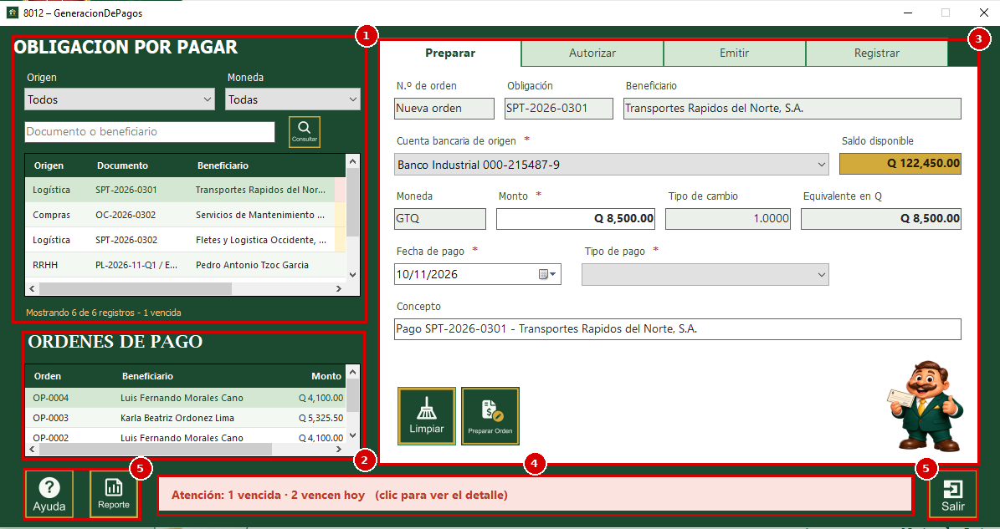
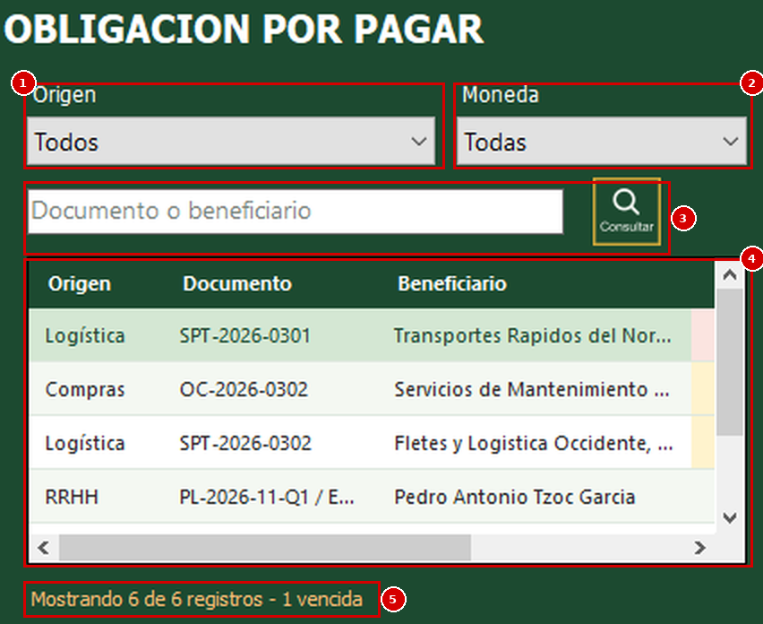
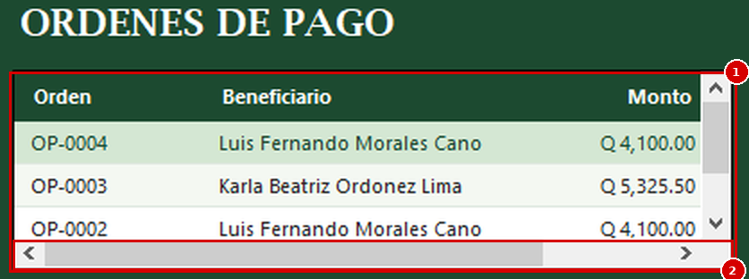
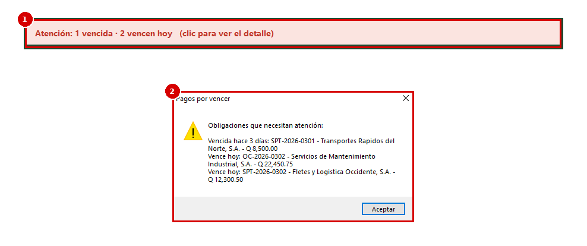
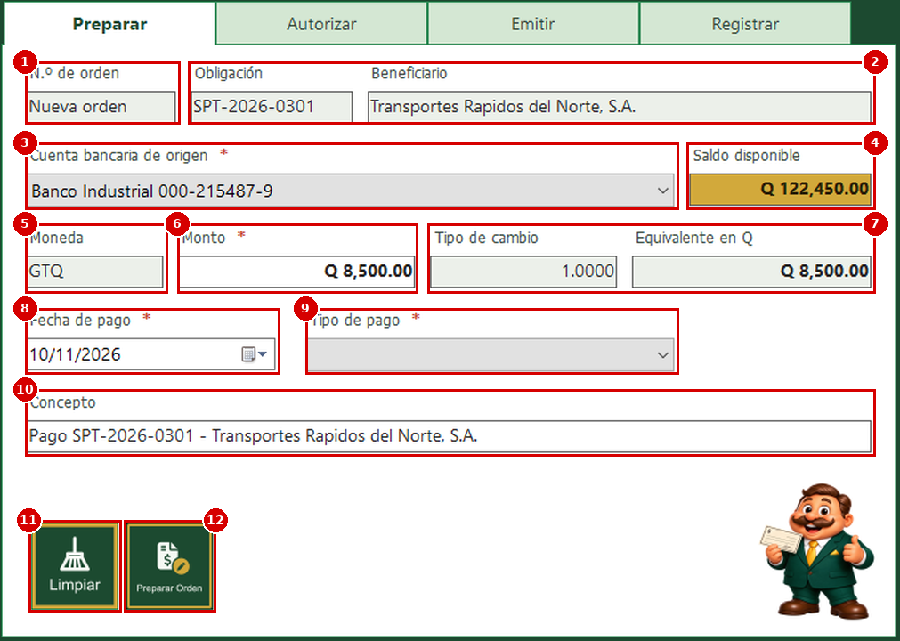
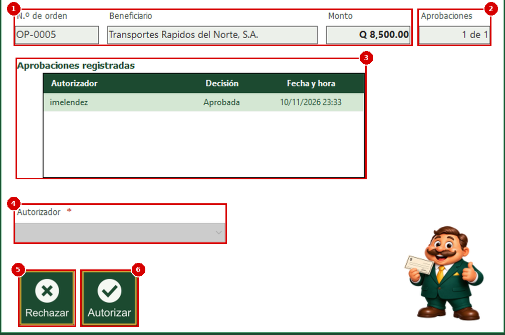
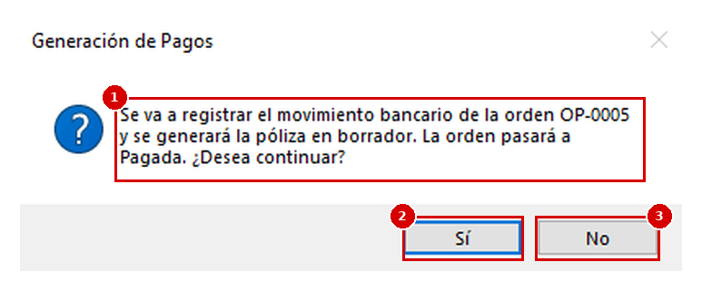
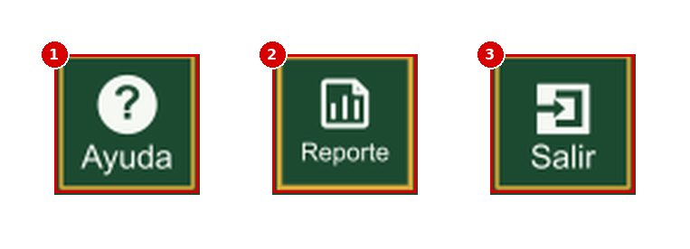

Esta es la ventana del proceso de Generación de Pagos del módulo de Bancos. Sirve para pagar lo que la empresa debe: toma una obligación pendiente (una compra, una planilla o un pago de Logística), prepara una orden de pago, la autoriza, emite el cheque o envía la transferencia y, al final, registra el movimiento bancario con su póliza en borrador. Cada orden avanza por cuatro pestañas, en este orden: "Preparar", "Autorizar", "Emitir" y "Registrar". En las imágenes de esta ayuda, los números rojos indican el orden en que se explica cada elemento.
1. En el MDI de Bancos, en el panel de botones de la izquierda, busque el botón de Procesos "Generación de Pagos".
2. Presiónelo. Se abrirá la ventana "8012 – GeneracionDePagos".
Si no ve el botón, solicite al administrador del sistema que le asigne el permiso para este proceso.
1. Obligación por pagar; lista de lo que está pendiente de pago, con filtros para buscar.
2. Órdenes de pago; lista de las órdenes que ya se prepararon, con su estado.
3. Pestañas del proceso; "Preparar", "Autorizar", "Emitir" y "Registrar". Es donde se trabaja la obligación o la orden que se haya elegido.
4. Aviso de vencimientos; franja de la parte de abajo que avisa cuántas obligaciones están vencidas o por vencer.
5. Botones; "Ayuda", "Reporte" y "Salir".

1. Origen; lista para ver solo las obligaciones de un origen: "Compras y CxP", "Recursos Humanos" o "Logística". "Todos" muestra todas.
2. Moneda; lista para ver solo las obligaciones de una moneda. "Todas" muestra todas.
3. Documento o beneficiario; escriba aquí parte del número de documento o del nombre del beneficiario y presione el botón de la lupa ("Consultar").
4. Tabla de obligaciones; tiene estas columnas: "Origen" es de dónde viene la obligación (Compras, RRHH o Logística); "Documento" es el número del documento; "Beneficiario" es a quién se le va a pagar; "Vencimiento" es la fecha límite de pago; "Moneda" y "Monto" son lo que falta por pagar. Las últimas columnas se ven con la barra de desplazamiento de abajo. Si una obligación ya tiene una orden de pago vigente, no aparece en la lista.
5. Mostrando; indica cuántos registros se están viendo. Si hay obligaciones vencidas, también lo anota.
Los vencimientos se marcan con color: en rojo las obligaciones vencidas y en un tono amarillo las que vencen en los próximos 3 días. Si deja el cursor sobre la fecha, el sistema indica cuántos días faltan o cuántos días lleva vencida.
Para preparar el pago, haga clic sobre la fila de la obligación. Sus datos pasan a la pestaña "Preparar".

1. Tabla de órdenes; muestra las órdenes más recientes con estas columnas: "Orden" es el número de la orden (por ejemplo OP-0001); "Beneficiario"; "Monto"; "Moneda" y "Estado". La fila resaltada es la que está seleccionada.
2. Barra de desplazamiento; permite ver las columnas "Moneda" y "Estado", que no caben en el ancho de la tabla.
El estado indica en qué etapa va la orden: "Pendiente" (preparada, falta autorizarla), "Autorizada", "Emitida" (ya se generó el cheque o se envió la instrucción de transferencia), "Pagada" (ya se registró el movimiento bancario), "Rechazada" o "Anulada". Cada estado se muestra con un color distinto.
Para continuar con una orden, haga clic sobre su fila. La ventana lleva sola a la pestaña que corresponde al estado de la orden: "Autorizar" si está pendiente o rechazada, "Emitir" si está autorizada y "Registrar" si ya fue emitida o pagada.

1. Franja de la parte de abajo; el sistema resume las obligaciones que necesitan atención, por ejemplo "Atención: 1 vence hoy". Se muestra en rojo cuando hay obligaciones vencidas o que vencen hoy, y en ámbar cuando solo hay obligaciones por vencer en los próximos 3 días. Si no hay ninguna, la franja no se muestra.
2. Ventana "Pagos por vencer"; se abre al hacer clic sobre la franja y detalla cuántos días lleva vencida o cuánto falta, el documento, el beneficiario y el importe de cada obligación.

Con una obligación seleccionada, la pestaña "Preparar" ya trae sus datos. Los campos con asterisco rojo (*) son obligatorios.
1. N.º de orden; muestra "Nueva orden" y el sistema le asigna el número al preparar la orden. No se escribe.
2. Obligación y Beneficiario; el documento que se va a pagar y a quién. No se escriben.
3. Cuenta bancaria de origen; lista con las cuentas activas de la misma moneda de la obligación, con el nombre del banco y el número de cuenta. Elija de cuál se pagará.
4. Saldo disponible; al elegir la cuenta muestra cuánto dinero puede usarse de ella.
5. Moneda; la moneda de la obligación. No se escribe.
6. Monto; trae el monto pendiente de la obligación. Puede escribir un monto menor si va a pagar solo una parte; si escribe uno mayor, el sistema no deja crear la orden.
7. Tipo de cambio y Equivalente en Q; si la obligación está en otra moneda, muestran el tipo de cambio del día y cuánto equivale en quetzales. Si no hay tipo de cambio del día, el sistema lo indica con el texto "Sin tipo de cambio".
8. Fecha de pago; día en que se desea pagar. No puede ser anterior a hoy.
9. Tipo de pago; lista con los tipos de pago disponibles (por ejemplo cheque o transferencia). Las planillas solo se pagan con cheque.
10. Concepto; texto que acompaña al pago. El sistema lo llena solo con "Pago [documento] - [beneficiario]". No se escribe.
11. Limpiar; borra lo que se haya llenado en la pestaña para empezar con otra obligación. No modifica ninguna orden.
12. Preparar Orden; crea la orden de pago.

1. Elija la obligación, la cuenta de origen y el tipo de pago, revise el monto y la fecha.
2. Presione "Preparar Orden".
3. Si todo está bien, aparece el mensaje "La orden de pago se preparó correctamente." y la orden queda con el estado "Pendiente". Aparece en la lista de órdenes y la ventana pasa a la pestaña "Autorizar".
Si falta algo, el sistema lo avisa con alguno de estos mensajes: "Seleccione una obligación de la lista.", "Seleccione la cuenta de origen.", "Ingrese un monto mayor a cero." o "Seleccione el tipo de pago.". Si no hay cuentas activas en la moneda de la obligación, muestra "No hay cuentas bancarias activas en [moneda] para pagar esta obligación.". Cuando el problema lo detecta el sistema al crear la orden, muestra "No se pudo completar la operación:" seguido del motivo, por ejemplo "Fondos insuficientes en la cuenta seleccionada.", "El monto supera lo que queda pendiente de la obligación." o "La cuenta no tiene disponibilidad registrada para hoy.". En esos casos la orden no se crea.
Esta pestaña se usa con una orden en estado "Pendiente". Solo pueden autorizar o rechazar los usuarios que tienen el perfil de Tesorero.
1. N.º de orden, Beneficiario y Monto; datos de la orden seleccionada. No se escriben.
2. Aprobaciones; muestra cuántas aprobaciones lleva la orden de las que necesita, por ejemplo "1 de 2". El número que se necesita depende de una política según el monto y la moneda. Si no hay una política vigente para ese monto, muestra "Sin política vigente" y no se puede autorizar.
3. Aprobaciones registradas; tabla con quién decidió ("Autorizador"), cuál fue la "Decisión" y la "Fecha y hora".
4. Autorizador; lista con los usuarios que tienen el perfil de Tesorero. Elija quién toma la decisión.
5. Rechazar; rechaza la orden. El sistema pregunta "¿Seguro que desea rechazar la orden [número]?". Si confirma, la orden queda "Rechazada".
6. Autorizar; registra su aprobación. Si ya se juntaron todas las aprobaciones que necesita, aparece "La orden quedó autorizada." y la orden pasa a "Autorizada". Si todavía faltan, aparece "Aprobación registrada. La orden aún necesita más aprobaciones." y la orden sigue "Pendiente" para que otro autorizador la apruebe.
Si no elige a nadie, el sistema muestra "Seleccione el autorizador.". Si el mismo autorizador ya registró su decisión en la orden, muestra "No se pudo completar la operación: Ese autorizador ya registró su decisión en esta orden.". Si el usuario no tiene el perfil de Tesorero, el motivo es "Solo un usuario con el perfil de Tesorero puede autorizar o rechazar órdenes de pago.".
En la imagen, la orden ya reunió la aprobación que necesita ("1 de 1"); por eso la lista de autorizadores y los botones "Rechazar" y "Autorizar" aparecen deshabilitados.

Esta pestaña se usa con una orden "Autorizada". Según el tipo de pago de la orden se habilita un botón u otro.
1. N.º de orden, Beneficiario, Tipo de pago e Importe; datos de la orden. No se escriben.
2. Cuenta de origen; banco, número de cuenta y moneda de donde sale el pago.
3. Serie de chequera y Siguiente cheque; solo se llenan cuando el pago es con cheque. Muestran la chequera activa de la cuenta y el número de cheque que se va a usar. Si la cuenta no tiene una chequera activa, la serie muestra "Sin chequera activa" y el sistema no genera el cheque.
4. Enviar; botón para pagos con transferencia. Registra la instrucción de pago al banco. El sistema responde "La instrucción de pago quedó registrada. El pago se confirma en la pestaña Registrar." y la orden pasa a "Emitida".
5. Emitir; botón para pagos con cheque. Genera el cheque con el siguiente número de la chequera y muestra el mensaje con el número del cheque. La orden pasa a "Emitida".

Esta es la última etapa. Se usa con una orden "Emitida" para confirmar el pago, y después se puede volver a consultar con la orden "Pagada".
1. N.º de orden, Movimiento bancario, Importe, Tipo de cambio e Importe en Q; datos de la orden y, una vez registrado, del movimiento bancario que se generó. No se escriben.
2. Póliza bancaria; tabla con las cuentas contables de la póliza: "Código de cuenta", "Nombre de la cuenta", "Debe" y "Haber". Junto al título aparece el estado de la póliza; mientras no se registre muestra "Estado: Sin registrar".
3. Diferencia, Total debe y Total haber; son los totales de la póliza. La diferencia debe ser 0.
4. Registrar movimiento; botón que registra el pago en el banco y genera la póliza. Está deshabilitado si la orden no está "Emitida", si ya se registró o si falta información.
Si falta el tipo de cambio de la moneda de la orden, o la configuración de póliza de la cuenta, el sistema lo indica en esta pestaña y no permite registrar.

1. Al presionar "Registrar movimiento", el sistema pregunta "Se va a registrar el movimiento bancario de la orden [número] y se generará la póliza en borrador. La orden pasará a Pagada. ¿Desea continuar?".
2. Presione "Sí" para confirmar. Aparece "El movimiento bancario y la póliza en borrador quedaron registrados." y la orden queda "Pagada".
3. Presione "No" para cancelar; no se registra nada.

1. Ayuda; abre esta ayuda en la página de Generación de Pagos.
2. Reporte; abre el reporte con las órdenes de pago.
3. Salir; cierra la ventana de Generación de Pagos.

1. Presione el botón "Reporte". Se abre la ventana "8012–FrmReporteGeneracionPagos" con el listado de todas las órdenes de pago: número, referencia, beneficiario, tipo de pago, moneda, importe, estado y fecha programada.
2. Desde la barra del reporte puede cambiar de página, hacer zoom, imprimir y guardar el reporte como archivo (por ejemplo PDF, Word o Excel).

1. Presione "Ayuda" para abrir esta página. Si el sistema no encuentra el archivo de ayuda, muestra el mensaje "No se encontró el archivo de ayuda del módulo de Bancos.".
1. Presione "Salir" para cerrar la ventana. Las órdenes ya preparadas, autorizadas, emitidas o registradas quedan guardadas; lo que solo estaba llenado en pantalla sin presionar el botón de la etapa no se guarda.